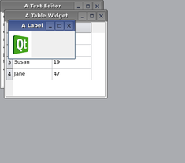

QMdiArea Class
The QMdiArea widget provides an area in which MDI windows are displayed. More...
| Header: | #include <QMdiArea> |
| CMake: | find_package(Qt6 REQUIRED COMPONENTS Widgets) target_link_libraries(mytarget PRIVATE Qt6::Widgets) |
| qmake: | QT += widgets |
| Inherits: | QAbstractScrollArea |
Public Types
| enum | AreaOption { DontMaximizeSubWindowOnActivation } |
| flags | AreaOptions |
| enum | ViewMode { SubWindowView, TabbedView } |
| enum | WindowOrder { CreationOrder, StackingOrder, ActivationHistoryOrder } |
Properties
|
|
Public Functions
| QMdiArea(QWidget *parent = nullptr) | |
| virtual | ~QMdiArea() |
| QMdiArea::WindowOrder | activationOrder() const |
| QMdiSubWindow * | activeSubWindow() const |
| QMdiSubWindow * | addSubWindow(QWidget *widget, Qt::WindowFlags windowFlags = Qt::WindowFlags()) |
| QBrush | background() const |
| QMdiSubWindow * | currentSubWindow() const |
| bool | documentMode() const |
| void | removeSubWindow(QWidget *widget) |
| void | setActivationOrder(QMdiArea::WindowOrder order) |
| void | setBackground(const QBrush &background) |
| void | setDocumentMode(bool enabled) |
| void | setOption(QMdiArea::AreaOption option, bool on = true) |
| void | setTabPosition(QTabWidget::TabPosition position) |
| void | setTabShape(QTabWidget::TabShape shape) |
| void | setTabsClosable(bool closable) |
| void | setTabsMovable(bool movable) |
| void | setViewMode(QMdiArea::ViewMode mode) |
| QList<QMdiSubWindow *> | subWindowList(QMdiArea::WindowOrder order = CreationOrder) const |
| QTabWidget::TabPosition | tabPosition() const |
| QTabWidget::TabShape | tabShape() const |
| bool | tabsClosable() const |
| bool | tabsMovable() const |
| bool | testOption(QMdiArea::AreaOption option) const |
| QMdiArea::ViewMode | viewMode() const |
Reimplemented Public Functions
| virtual QSize | minimumSizeHint() const override |
| virtual QSize | sizeHint() const override |
Public Slots
| void | activateNextSubWindow() |
| void | activatePreviousSubWindow() |
| void | cascadeSubWindows() |
| void | closeActiveSubWindow() |
| void | closeAllSubWindows() |
| void | setActiveSubWindow(QMdiSubWindow *window) |
| void | tileSubWindows() |
Signals
| void | subWindowActivated(QMdiSubWindow *window) |
Reimplemented Protected Functions
| virtual void | childEvent(QChildEvent *childEvent) override |
| virtual bool | event(QEvent *event) override |
| virtual bool | eventFilter(QObject *object, QEvent *event) override |
| virtual void | paintEvent(QPaintEvent *paintEvent) override |
| virtual void | resizeEvent(QResizeEvent *resizeEvent) override |
| virtual void | scrollContentsBy(int dx, int dy) override |
| virtual void | showEvent(QShowEvent *showEvent) override |
| virtual void | timerEvent(QTimerEvent *timerEvent) override |
| virtual bool | viewportEvent(QEvent *event) override |
Protected Slots
| virtual void | setupViewport(QWidget *viewport) override |
Detailed Description
QMdiArea functions, essentially, like a window manager for MDI windows. For instance, it draws the windows it manages on itself and arranges them in a cascading or tile pattern. QMdiArea is commonly used as the center widget in a QMainWindow to create MDI applications, but can also be placed in any layout. The following code adds an area to a main window:
QMainWindow *mainWindow = new QMainWindow;
mainWindow->setCentralWidget(mdiArea);
Unlike the window managers for top-level windows, all window flags (Qt::WindowFlags) are supported by QMdiArea as long as the flags are supported by the current widget style. If a specific flag is not supported by the style (e.g., the WindowShadeButtonHint), you can still shade the window with showShaded().
Subwindows in QMdiArea are instances of QMdiSubWindow. They are added to an MDI area with addSubWindow(). It is common to pass a QWidget, which is set as the internal widget, to this function, but it is also possible to pass a QMdiSubWindow directly. The class inherits QWidget, and you can use the same API as with a normal top-level window when programming. QMdiSubWindow also has behavior that is specific to MDI windows. See the QMdiSubWindow class description for more details.
A subwindow becomes active when it gets the keyboard focus, or when setFocus() is called. The user activates a window by moving focus in the usual ways. The MDI area emits the subWindowActivated() signal when the active window changes, and the activeSubWindow() function returns the active subwindow.
The convenience function subWindowList() returns a list of all subwindows. This information could be used in a popup menu containing a list of windows, for example.
The subwindows are sorted by the current WindowOrder. This is used for the subWindowList() and for activateNextSubWindow() and activatePreviousSubWindow(). Also, it is used when cascading or tiling the windows with cascadeSubWindows() and tileSubWindows().
QMdiArea provides two built-in layout strategies for subwindows: cascadeSubWindows() and tileSubWindows(). Both are slots and are easily connected to menu entries.
|  |  |
Note: The default scroll bar property for QMdiArea is Qt::ScrollBarAlwaysOff.
See also QMdiSubWindow.
Member Type Documentation
enum QMdiArea::AreaOption
flags QMdiArea::AreaOptions
This enum describes options that customize the behavior of the QMdiArea.
| Constant | Value | Description |
|---|---|---|
QMdiArea::DontMaximizeSubWindowOnActivation | 0x1 | When the active subwindow is maximized, the default behavior is to maximize the next subwindow that is activated. Set this option if you do not want this behavior. |
The AreaOptions type is a typedef for QFlags<AreaOption>. It stores an OR combination of AreaOption values.
enum QMdiArea::ViewMode
This enum describes the view mode of the area; i.e. how sub-windows will be displayed.
| Constant | Value | Description |
|---|---|---|
QMdiArea::SubWindowView | 0 | Display sub-windows with window frames (default). |
QMdiArea::TabbedView | 1 | Display sub-windows with tabs in a tab bar. |
See also setViewMode().
enum QMdiArea::WindowOrder
Specifies the criteria to use for ordering the list of child windows returned by subWindowList(). The functions cascadeSubWindows() and tileSubWindows() follow this order when arranging the windows.
| Constant | Value | Description |
|---|---|---|
QMdiArea::CreationOrder | 0 | The windows are returned in the order of their creation. |
QMdiArea::StackingOrder | 1 | The windows are returned in the order in which they are stacked, with the top-most window being last in the list. |
QMdiArea::ActivationHistoryOrder | 2 | The windows are returned in the order in which they were activated. |
See also subWindowList().
Property Documentation
activationOrder : WindowOrder
This property holds the ordering criteria for subwindow lists
This property specifies the ordering criteria for the list of subwindows returned by subWindowList(). By default, it is the window creation order.
Access functions:
| QMdiArea::WindowOrder | activationOrder() const |
| void | setActivationOrder(QMdiArea::WindowOrder order) |
See also subWindowList().
background : QBrush
This property holds the background brush for the workspace
This property sets the background brush for the workspace area itself. By default, it is a gray color, but can be any brush (e.g., colors, gradients or pixmaps).
Access functions:
| QBrush | background() const |
| void | setBackground(const QBrush &background) |
documentMode : bool
This property holds whether the tab bar is set to document mode in tabbed view mode.
Document mode is disabled by default.
Access functions:
| bool | documentMode() const |
| void | setDocumentMode(bool enabled) |
See also QTabBar::documentMode and setViewMode().
tabPosition : QTabWidget::TabPosition
This property holds the position of the tabs in tabbed view mode.
Possible values for this property are described by the QTabWidget::TabPosition enum.
Access functions:
| QTabWidget::TabPosition | tabPosition() const |
| void | setTabPosition(QTabWidget::TabPosition position) |
See also QTabWidget::TabPosition and setViewMode().
tabShape : QTabWidget::TabShape
This property holds the shape of the tabs in tabbed view mode.
Possible values for this property are QTabWidget::Rounded (default) or QTabWidget::Triangular.
Access functions:
| QTabWidget::TabShape | tabShape() const |
| void | setTabShape(QTabWidget::TabShape shape) |
See also QTabWidget::TabShape and setViewMode().
tabsClosable : bool
This property holds whether the tab bar should place close buttons on each tab in tabbed view mode.
Tabs are not closable by default.
Access functions:
| bool | tabsClosable() const |
| void | setTabsClosable(bool closable) |
See also QTabBar::tabsClosable and setViewMode().
tabsMovable : bool
This property holds whether the user can move the tabs within the tabbar area in tabbed view mode.
Tabs are not movable by default.
Access functions:
| bool | tabsMovable() const |
| void | setTabsMovable(bool movable) |
See also QTabBar::movable and setViewMode().
viewMode : ViewMode
This property holds the way sub-windows are displayed in the QMdiArea.
By default, the SubWindowView is used to display sub-windows.
Access functions:
| QMdiArea::ViewMode | viewMode() const |
| void | setViewMode(QMdiArea::ViewMode mode) |
See also ViewMode, setTabShape(), and setTabPosition().
Member Function Documentation
QMdiArea::QMdiArea(QWidget *parent = nullptr)
Constructs an empty mdi area. parent is passed to QWidget's constructor.
[virtual noexcept] QMdiArea::~QMdiArea()
Destroys the MDI area.
[slot] void QMdiArea::activateNextSubWindow()
Gives the keyboard focus to another window in the list of child windows. The window activated will be the next one determined by the current activation order.
See also activatePreviousSubWindow() and QMdiArea::WindowOrder.
[slot] void QMdiArea::activatePreviousSubWindow()
Gives the keyboard focus to another window in the list of child windows. The window activated will be the previous one determined by the current activation order.
See also activateNextSubWindow() and QMdiArea::WindowOrder.
QMdiSubWindow *QMdiArea::activeSubWindow() const
Returns a pointer to the current active subwindow. If no window is currently active, nullptr is returned.
Subwindows are treated as top-level windows with respect to window state, i.e., if a widget outside the MDI area is the active window, no subwindow will be active. Note that if a widget in the window in which the MDI area lives gains focus, the window will be activated.
See also setActiveSubWindow() and Qt::WindowState.
QMdiSubWindow *QMdiArea::addSubWindow(QWidget *widget, Qt::WindowFlags windowFlags = Qt::WindowFlags())
Adds widget as a new subwindow to the MDI area. If windowFlags are non-zero, they will override the flags set on the widget.
The widget can be either a QMdiSubWindow or another QWidget (in which case the MDI area will create a subwindow and set the widget as the internal widget).
Note: Once the subwindow has been added, its parent will be the viewport widget of the QMdiArea.
QMdiArea mdiArea;
QMdiSubWindow *subWindow1 = new QMdiSubWindow;
subWindow1->setWidget(internalWidget1);
subWindow1->setAttribute(Qt::WA_DeleteOnClose);
mdiArea.addSubWindow(subWindow1);
QMdiSubWindow *subWindow2 =
mdiArea.addSubWindow(internalWidget2);
When you create your own subwindow, you must set the Qt::WA_DeleteOnClose widget attribute if you want the window to be deleted when closed in the MDI area. If not, the window will be hidden and the MDI area will not activate the next subwindow.
Returns the QMdiSubWindow that is added to the MDI area.
See also removeSubWindow().
[slot] void QMdiArea::cascadeSubWindows()
Arranges all the child windows in a cascade pattern.
See also tileSubWindows().
[override virtual protected] void QMdiArea::childEvent(QChildEvent *childEvent)
Reimplements: QObject::childEvent(QChildEvent *event).
[slot] void QMdiArea::closeActiveSubWindow()
Closes the active subwindow.
See also closeAllSubWindows().
[slot] void QMdiArea::closeAllSubWindows()
Closes all subwindows by sending a QCloseEvent to each window. You may receive subWindowActivated() signals from subwindows before they are closed (if the MDI area activates the subwindow when another is closing).
Subwindows that ignore the close event will remain open.
See also closeActiveSubWindow().
QMdiSubWindow *QMdiArea::currentSubWindow() const
Returns a pointer to the current subwindow, or nullptr if there is no current subwindow.
This function will return the same as activeSubWindow() if the QApplication containing QMdiArea is active.
See also activeSubWindow() and QApplication::activeWindow().
[override virtual protected] bool QMdiArea::event(QEvent *event)
Reimplements: QAbstractScrollArea::event(QEvent *event).
[override virtual protected] bool QMdiArea::eventFilter(QObject *object, QEvent *event)
Reimplements: QObject::eventFilter(QObject *watched, QEvent *event).
[override virtual] QSize QMdiArea::minimumSizeHint() const
Reimplements: QAbstractScrollArea::minimumSizeHint() const.
[override virtual protected] void QMdiArea::paintEvent(QPaintEvent *paintEvent)
Reimplements: QAbstractScrollArea::paintEvent(QPaintEvent *event).
void QMdiArea::removeSubWindow(QWidget *widget)
Removes widget from the MDI area. The widget must be either a QMdiSubWindow or a widget that is the internal widget of a subwindow. Note widget is never actually deleted by QMdiArea. If a QMdiSubWindow is passed in, its parent is set to nullptr and it is removed; but if an internal widget is passed in, the child widget is set to nullptr and the QMdiSubWindow is not removed.
See also addSubWindow().
[override virtual protected] void QMdiArea::resizeEvent(QResizeEvent *resizeEvent)
Reimplements: QAbstractScrollArea::resizeEvent(QResizeEvent *event).
[override virtual protected] void QMdiArea::scrollContentsBy(int dx, int dy)
Reimplements: QAbstractScrollArea::scrollContentsBy(int dx, int dy).
[slot] void QMdiArea::setActiveSubWindow(QMdiSubWindow *window)
Activates the subwindow window. If window is nullptr, any current active window is deactivated.
See also activeSubWindow().
void QMdiArea::setOption(QMdiArea::AreaOption option, bool on = true)
If on is true, option is enabled on the MDI area; otherwise it is disabled. See AreaOption for the effect of each option.
See also AreaOption and testOption().
[override virtual protected slot] void QMdiArea::setupViewport(QWidget *viewport)
Reimplements: QAbstractScrollArea::setupViewport(QWidget *viewport).
This slot is called by QAbstractScrollArea after setViewport() has been called. Reimplement this function in a subclass of QMdiArea to initialize the new viewport before it is used.
See also setViewport().
[override virtual protected] void QMdiArea::showEvent(QShowEvent *showEvent)
Reimplements: QWidget::showEvent(QShowEvent *event).
[override virtual] QSize QMdiArea::sizeHint() const
Reimplements: QAbstractScrollArea::sizeHint() const.
[signal] void QMdiArea::subWindowActivated(QMdiSubWindow *window)
QMdiArea emits this signal after window has been activated. When window is nullptr, QMdiArea has just deactivated its last active window, and there are no active windows on the workspace.
See also QMdiArea::activeSubWindow().
QList<QMdiSubWindow *> QMdiArea::subWindowList(QMdiArea::WindowOrder order = CreationOrder) const
Returns a list of all subwindows in the MDI area. If order is CreationOrder (the default), the windows are sorted in the order in which they were inserted into the workspace. If order is StackingOrder, the windows are listed in their stacking order, with the topmost window as the last item in the list. If order is ActivationHistoryOrder, the windows are listed according to their recent activation history.
See also WindowOrder.
bool QMdiArea::testOption(QMdiArea::AreaOption option) const
Returns true if option is enabled; otherwise returns false.
See also AreaOption and setOption().
[slot] void QMdiArea::tileSubWindows()
Arranges all child windows in a tile pattern.
See also cascadeSubWindows().
[override virtual protected] void QMdiArea::timerEvent(QTimerEvent *timerEvent)
Reimplements: QObject::timerEvent(QTimerEvent *event).
[override virtual protected] bool QMdiArea::viewportEvent(QEvent *event)
Reimplements: QAbstractScrollArea::viewportEvent(QEvent *event).